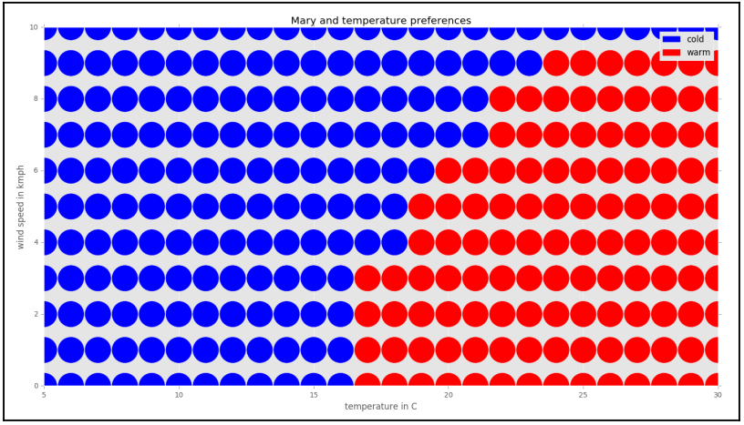
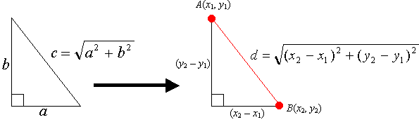

Pengertian, Pengenalan, dan Contoh Implementasi K-Nearest Neighbor (KNN)
Oleh Firdho Arianza/170441100101
Matkul : Data Mining
Prodi : Sistem Informasi/Fakultas Teknik/Universitas Trunojoyo Madura
1. Pendahuluan¶¶
Pada sekarang ini kebutuhan akan informasi semakin meningkat seiring dengan berkembangnya teknologi dalam menyebarkan informasi kepada masyarakat. Informasi yang dibutuhkan mengalami banyak perkembangan mulai dari informasi yang bersifat umum hingga informasi yang bersifat khusus. Banyaknya informasi dan dokumen yang tersedia mendorong pengguna untuk mencari cara lebih cepat dalam mendapatkan informasi dan dokumen yang dibutuhkan. Jika waktu pencarian terlalu lama, maka manfaat dari informasi yang diperoleh dapat berkurang. Hal ini dikarenakan informasi yang diperoleh sudah masuk waktu yang sudah tidak berguna atau tidak valid.
Klasifikasi dokumen dapat membantu proses pencarian sebuah dokumen dengan cepat dan tepat. Klasifikasi dokumen mengelompokan dokumen yang sesuai dengan katergori yang terkandung pada dokumen tersebut. Permasalahan klasifikasi dokumen bisa diselesaikan dengan banyak metode, salah satu diantaranya adalah K-Nearest Neighbor (KNN). Algoritma KNN merupakan sebuah metode untuk melakukan klasifikasi terhadap objek yang berdasarkan dari data yang jaraknya paling dekat dengan objek tersebut. Algoritma KNN merupakan sebuah metode untuk melakukan klasifikasi terhadap objek berdasarkan data pembelajaran yang jaraknya paling dekat dengan objek tersebut.Pengertian dan Cara Kerja Algoritma K-Nearest Neighbors (KNN)

K-nearest neighbors atau knn adalah algoritma yang berfungsi untuk melakukan klasifikasi suatu data berdasarkan data pembelajaran (train data sets), yang diambil dari k tetangga terdekatnya (nearest neighbors). Dengan k merupakan banyaknya tetangga terdekat.
A. Cara Kerja Algoritma K-Nearest Neighbors (KNN)¶¶
K-nearest neighbors melakukan klasifikasi dengan proyeksi data pembelajaran pada ruang berdimensi banyak. Ruang ini dibagi menjadi bagian-bagian yang merepresentasikan kriteria data pembelajaran. Setiap data pembelajaran direpresentasikan menjadi titik-titik c pada ruang dimensi banyak.
KLASIFIKASI TERDEKAT (NEAREST NEIGHBOR CLASSIFICATION)¶¶
Data baru yang diklasifikasi selanjutnya diproyeksikan pada ruang dimensi banyak yang telah memuat titik-titik c data pembelajaran. Proses klasifikasi dilakukan dengan mencari titik c**terdekat dari **c-baru (nearest neighbor). Teknik pencarian tetangga terdekat yang umum dilakukan dengan menggunakan formula jarak euclidean*.* Berikut beberapa formula yang digunakan dalam algoritma knn.
Jarak Euclidean adalah formula untuk mencari jarak antara 2 titik dalam ruang dua dimensi.

Jarak Hamming adalah cara mencari jarak antar 2 titik yang dihitung dengan panjang vektor biner yang dibentuk oleh dua titik tersebut dalam block kode biner.
Manhattan Distance atau Taxicab Geometri adalah formula untuk mencari jarak d antar 2 vektor p,q pada ruang dimensi n*.*
Minkowski distance adalah formula pengukuran antar 2 titik pada ruang vektor normal yang merupakan hibridisasi yang mengeneralisasi euclidean distance dan mahattan distance.
Teknik pencarian tetangga terdekat disesuaikan dengan dimensi data, proyeksi, dan kemudahan implementasi oleh pengguna.
BANYAKNYA K TETANGGA TERDEKAT¶¶
Untuk menggunakan algoritma k nearest neighbors, perlu ditentukan banyaknya k tetangga terdekat yang digunakan untuk melakukan klasifikasi data baru. Banyaknya k, sebaiknya merupakan angka ganjil, misalnya k = 1, 2, 3, dan seterusnya. Penentuan nilai k dipertimbangkan berdasarkan banyaknya data yang ada dan ukuran dimensi yang dibentuk oleh data. Semakin banyak data yang ada, angka k yang dipilih sebaiknya semakin rendah. Namun, semakin besar ukuran dimensi data, angka k yang dipilih sebaiknya semakin tinggi.
ALGORITMA K-NEAREST NEIGHBORS¶¶
- Tentukan k bilangan bulat positif berdasarkan ketersediaan data pembelajaran.
- Pilih tetangga terdekat dari data baru sebanyak k.
- Tentukan klasifikasi paling umum pada langkah (ii), dengan menggunakan frekuensi terbanyak.
- Keluaran klasifikasi dari data sampel baru.
B. Contoh Aplikasi K Nearest Neighbor¶¶
Contoh berikut diambil dari buku “Data Science Algorithms in a Week” yang ditulis oleh Dávid Natingga.
Pada contoh ini, dilakukan klasifikasi suhu udara berdasarkan persepsi seseorang yang bernama Marry. Adapun klasifikasi suhu udara terdiri dari 2 persepsi yaitu Panas dan Dingin. Persepsi ini dapat diukur berdasarkan 2 variabel yaitu temperatur dalam derajat celcius dan kecepatan angin dalam km/h. Diperoleh data berikut,
| Temperatur Udara (ºC) | Kecepatan Angin (km/jam) | Klasifikasi atau Persepsi Marry |
|---|---|---|
| 10 | 0 | Dingin |
| 25 | 0 | Panas |
| 15 | 5 | Dingin |
| 20 | 3 | Panas |
| 18 | 7 | Dingin |
| 20 | 10 | Dingin |
| 22 | 5 | Panas |
| 24 | 6 | Panas |
Untuk contoh ini terbentuk ruang dimensi 2, yang berisi 2 kriteria yaitu temperatur udara dan

Pada proyeksi di atas sumbu vertikal adalah kecepatan angin, sumbu horizontal adalah temperatur suhu, warna biru adalah dingin, dan warna merah adalah panas.
Dari proyeksi diatas, dapat dilakukan klasifikasi data baru. Misalnya, Bagaimana persepsi Marry saat temperatur udara 16°C dan kecepatan angin 3km/jam.
Proses pencarian tetangga terdekat
Dapat diketahui tetangga terdekatnya adalah titik c dingin dengan temperature 15°C dan kecepatan angin 5km/jam. Jadi berdasarkan pemilihan k = 1, klasifikasinya adalah dingin.
Dengan melakukan proses di atas terhadap semua titik, diperoleh proyeksi klasifikasi berikut.

Catatan: Untuk pemilihan k lainnya, hasil klasifikasi ditentukan dengan frekuensi terbanyak. Misalnya k = 3, dengan titik terdekat dingin, panas, dingin. Hasil klasifikasi data baru tersebut adalah dingin.
2. Pengertian K-Nearest Neighbor (KNN)¶¶
KNN adalah salah satu metode dimana metode ini melakukan klasifikasi berdasarkan data training atau data pembelajaran dilihat dari jarak yang paling dekat dengan objek berdasarkan nilai k. Metode ini bertujuan untuk mengklasifikasikan objek baru berdasarkan atribut dan training sample. Diberikan suatu titik query, selanjutnya akan ditemukan sejumlah K objek atau titik training yang paling dekat dengan titik query. Nilai prediksi dari query akan ditentukan berdasarkan klasifikasi tetanggaa Algoritma K-Nearest Neighbor (K-NN)** adalah sebuah metode klasifikasi terhadap sekumpulan data berdasarkan pembelajaran data yang sudah terklasifikasikan sebelumya. Termasuk dalam supervised learning, dimana hasil query instance yang baru diklasifikasikan berdasarkan mayoritas kedekatan jarak dari kategori yang ada dalam K-NN.
Dengan demikian, kelas KNeighborsClassifier dapat digunakan tanpa secara eksplisit menentukan nilai parameter apa pun. Nilai default sudah disediakan. Ini membuatnya mudah untuk menggunakannya untuk tujuan pembelajaran awal dan kemudian menambahkan nilai parameter, satu per satu. Inilah tepatnya yang akan saya lakukan. Kami akan menggunakan dataset iris untuk program demo kami. Kumpulan data Iris tersedia dalam sklearn itu sendiri.
Secara Sederhana K-nearest neighbors atau knn adalah algoritma yang berfungsi untuk melakukan klasifikasi suatu data berdasarkan data pembelajaran (train data sets), yang diambil dari k tetangga terdekatnya (nearest neighbors). Dengan k merupakan banyaknya tetangga terdekat. KNN ini dapat kita temukan bilamana kita sedang belajar Machine Learning. ML intinya berkaitan dengan automasi atau bagaimana sebuah machine dapat belajar dari contoh-contoh yang kita berikan, terus memprediksi sesuatu yang sesuai dengan contoh-contoh tadi.
Lihat gambar di bawah, misalnya terdapat dua kategori yang ditunjukkan dengan Lingkaran Merah (LM) dan Kotak Hijau (KH). Kemudian kita hendak mengetahui kategori dari Bintang Biru (BB). BB dapat berupa LM atau tidak keduanya (gambar sebelah kiri). K adalah jumlah tetangga terdekat yang akan kita gunakan, asumsikan saja k = 3 (gambar sebelah kanan). Tentu dari sini kita bisa dapat segera tahu dengan membuat lingkaran yang memungkinkan BB menjadi di tengah-tengah 3 titik terdekat. Tiga titik terdekat ke BB adalah LM. Oleh karena itu, dengan sangat yakin kita dapat mengatakan bahwa BB mempunyai kelas LM. Dari sini tentu kita sadar, bahwa penentuan nilai K sangat penting pada algoritma KNN.
ilustrasi KNN
Penentuan jarak terdekat diantara dua titik di atas dapat menggunakan dalil Pythagoras, akan tetapi bilamana terdapat lebih dari dua feature/independent variable kita dapat menggunakan euclidean distance, jaccard, cosine, manhattan, minkowski, dll.

Rumus Pythagoras
Beberapa metode pengukuran jarak
Kalau diterapin di SIG (Sistem Informasi Geografis) tentu bisa dong? yup tentu sangat bisa. Misal untuk menentukan lokasi dari dua titik. Lihat gambar di bawah ini untuk lebih jelasnya..
contoh di ranah SIG sederhana
Secara garis besar dalam dunia data mining atau data science terdapat 2 pendekatan untuk melakukan teknik — teknik data mining. Supervised learning adalah sebuah pendekatan dimana sudah terdapat data yang dilatih, dan terdapat variable yang ditargetkan sehingga tujuan dari pendekatan ini adalah mengkelompokan suatu data ke data yang sudah ada, lain halnya dengan unsupervised learning, unsupervised learning tidak memiliki data latih, sehingga dari data yang ada, kita mengelompokan data tersebut menjadi 2 bagian atau 3 bagian dan seterusnya.
Sederhananya, Supervised itu artinya sudah ter*manage* dengan baik (data yang fitur dan labelnya udah jelas). Misal jikalau terdapat ciri-ciri daun yang phyllotaxis-nya berhadapan berseling, circumscriptio berbentuk jorong, apex falii berbentuk runcing, dan nervatio menyirip itu berarti sudah jelas mengkudu (Morinda citrifolia). Sedangkan Unsupervised learning targetnya atau labelnya belum jelas. Metode yang dipakai biasanya Clustering. Jadi kita cuma ngelompokin data yang punya keterkaitan satu sama lain, tanpa tahu mereka sebenernya bener-bener satu label atau enggak. Algoritma Supervised Learning misalnya Decision tree, Nearest — Neighbor Classifier, Naive Bayes Classifier, Artificial Neural Network, dll. Algoritma *Unsupervised Learning*misalnya K-Means, Hierarchical Clustering, DBSCAN, dll.
3. Iris Datasets¶¶
Kali ini saya menggunakan Python untuk melakukan coba-coba model. Disini saya menggunakan dataset iris. Dataset ini sangat populer digunakan untuk latihan pertama (R atau python). Iris biasanya sudah tersedia didalam modul sklearn (lengkap dengan target dan feature) atau jika kita belum install sklearn
# code untuk install modul sklearn pip install -U scikit-learn #jika menggunakan pip yang ada di python conda install scikit-learn #jika menggunakan anaconda
Terdapat 150 observasi (row) dengan feature/independent variable sebanyak 4 (Panjang sepal, lebar sepal, panjang petal, dan lebar petal). 150 observasi tersebut dibagi menjadi 50 observasi pada masing-masing spesies (Iris setosa, Iris versicolor, dan Iris virginica). Pada data iris, kita tidak akan menjumpai nilai null (N/A), sehingga kita tidak perlu capek-capek untuk merapikan data tersebut.

Pengukuran petal dan sepal
Pada gambar di bawah saya menggunakan atom dengan data iris yang sudah secara default berada pada modul sklearn. Kita tinggal memanggil data tersebut. Kemudian seperti biasa, kita definisikan variabel untuk memanggil data tersebut, dalam hal ini iris = load_iris().
scatter plot menggunakan data iris yang sudah tersedia di modul sklearn
Hasil grafik dari kode menggunakan atom
Untuk gambar di bawah ini saya menggunakan jupyter notebook, dengan data iris hasil download dengan format file csv. Modul Pandas dapat mempermudah kita dalam pemanggilan dataset yang kita butuhkan, untuk lebih jelasnya dapat dibaca disini. Penilaian subjektif saya, jika membandingkan atom dan jupyter notebook, saya lebih suka menggunakan jupyter notebook, karena selain ringan dia juga dapat mengeksport code-code yang telah kita tulis menggunakan ekstensi Gist-it ke github yang kita miliki.
In [2]:
import pandas as pd # import file menggunakan pandas
dataset = pd.read_csv('iris.csv')
In [3]:
dataset.head(5) #menampilkan dataset 5 teratas
Out[3]:
| sepal_length | sepal_width | petal_length | petal_width | species | |
|---|---|---|---|---|---|
| 0 | 5.1 | 3.5 | 1.4 | 0.2 | setosa |
| 1 | 4.9 | 3.0 | 1.4 | 0.2 | setosa |
| 2 | 4.7 | 3.2 | 1.3 | 0.2 | setosa |
| 3 | 4.6 | 3.1 | 1.5 | 0.2 | setosa |
| 4 | 5.0 | 3.6 | 1.4 | 0.2 | setosa |
In [4]:
dataset.groupby('species').size() #menampilkan row masing-masing spesies
Out[4]:
species setosa 50 versicolor 50 virginica 50 dtype: int64
4. Membuat data frame pada masing-masing spesies¶¶
In [5]:
setosa = dataset[dataset['species']=='setosa'] versicolor = dataset[dataset['species']=='versicolor'] virginica = dataset[dataset['species']=='virginica']
In [6]:
setosa.describe()
Out[6]:
| sepal_length | sepal_width | petal_length | petal_width | |
|---|---|---|---|---|
| count | 50.00000 | 50.000000 | 50.000000 | 50.00000 |
| mean | 5.00600 | 3.418000 | 1.464000 | 0.24400 |
| std | 0.35249 | 0.381024 | 0.173511 | 0.10721 |
| min | 4.30000 | 2.300000 | 1.000000 | 0.10000 |
| 25% | 4.80000 | 3.125000 | 1.400000 | 0.20000 |
| 50% | 5.00000 | 3.400000 | 1.500000 | 0.20000 |
| 75% | 5.20000 | 3.675000 | 1.575000 | 0.30000 |
| max | 5.80000 | 4.400000 | 1.900000 | 0.60000 |
In [7]:
virginica.describe()
Out[7]:
| sepal_length | sepal_width | petal_length | petal_width | |
|---|---|---|---|---|
| count | 50.00000 | 50.000000 | 50.000000 | 50.00000 |
| mean | 6.58800 | 2.974000 | 5.552000 | 2.02600 |
| std | 0.63588 | 0.322497 | 0.551895 | 0.27465 |
| min | 4.90000 | 2.200000 | 4.500000 | 1.40000 |
| 25% | 6.22500 | 2.800000 | 5.100000 | 1.80000 |
| 50% | 6.50000 | 3.000000 | 5.550000 | 2.00000 |
| 75% | 6.90000 | 3.175000 | 5.875000 | 2.30000 |
| max | 7.90000 | 3.800000 | 6.900000 | 2.50000 |
In [8]:
virginica.describe()
Out[8]:
| sepal_length | sepal_width | petal_length | petal_width | |
|---|---|---|---|---|
| count | 50.00000 | 50.000000 | 50.000000 | 50.00000 |
| mean | 6.58800 | 2.974000 | 5.552000 | 2.02600 |
| std | 0.63588 | 0.322497 | 0.551895 | 0.27465 |
| min | 4.90000 | 2.200000 | 4.500000 | 1.40000 |
| 25% | 6.22500 | 2.800000 | 5.100000 | 1.80000 |
| 50% | 6.50000 | 3.000000 | 5.550000 | 2.00000 |
| 75% | 6.90000 | 3.175000 | 5.875000 | 2.30000 |
| max | 7.90000 | 3.800000 | 6.900000 | 2.50000 |
In [9]:
# deskripsi dataset secara kesuluruhan dataset.describe()
Out[9]:
| sepal_length | sepal_width | petal_length | petal_width | |
|---|---|---|---|---|
| count | 150.000000 | 150.000000 | 150.000000 | 150.000000 |
| mean | 5.843333 | 3.054000 | 3.758667 | 1.198667 |
| std | 0.828066 | 0.433594 | 1.764420 | 0.763161 |
| min | 4.300000 | 2.000000 | 1.000000 | 0.100000 |
| 25% | 5.100000 | 2.800000 | 1.600000 | 0.300000 |
| 50% | 5.800000 | 3.000000 | 4.350000 | 1.300000 |
| 75% | 6.400000 | 3.300000 | 5.100000 | 1.800000 |
| max | 7.900000 | 4.400000 | 6.900000 | 2.500000 |
In [10]:
# count menjelaskan bahwa semua 4 features mempunyai 150 row # secara umum, dari rata-rata kita dapat mengatakan bahwa sepal lebih besar dari petal
In [16]:
import matplotlib.pyplot as plt
plt.figure()
fig,ax=plt.subplots(1,2,figsize=(15, 5))
setosa.plot(x="sepal_length", y="sepal_width", kind="scatter",ax=ax[0],label='setosa',color='r')
versicolor.plot(x="sepal_length",y="sepal_width",kind="scatter",ax=ax[0],label='versicolor',color='b')
virginica.plot(x="sepal_length", y="sepal_width", kind="scatter", ax=ax[0], label='virginica', color='g')
setosa.plot(x="petal_length", y="petal_width", kind="scatter",ax=ax[1],label='setosa',color='r')
versicolor.plot(x="petal_length",y="petal_width",kind="scatter",ax=ax[1],label='versicolor',color='b')
virginica.plot(x="petal_length", y="petal_width", kind="scatter", ax=ax[1], label='virginica', color='g')
ax[0].set(title='Perbandingan Sepal', ylabel='Lebar sepal (cm)')
ax[1].set(title='Perbandingan Petal', ylabel='Lebar petal(cm)')
ax[0].legend()
ax[1].legend()
plt.savefig('asda.png')
<Figure size 432x288 with 0 Axes>
![img](%0A)
Hasil grafik dari kode menggunakan jupyter notebook
Hasil grafik dari kedua kode (jupyter dan atom) memang sama saja, walaupun terdapat perbedaan, karena memang struktur file-nya sudah berbeda sejak awal. Jadi jangan bingun bilamana file yang dari sklearn tidak dapat menampilkan head() karena bentuknya dataframe.
Apabila ingin menampilkan PCA (Principal Component Analysis) dapat menggunakan code di bawah:
import matplotlib.pyplot as plt
from mpl_toolkits.mplot3d import Axes3D
from sklearn import datasets
from sklearn.decomposition import PCA
# import some data to play with
iris = datasets.load_iris()
X = iris.data[:, :2] # we only take the first two features.
y = iris.target
x_min, x_max = X[:, 0].min() - .5, X[:, 0].max() + .5
y_min, y_max = X[:, 1].min() - .5, X[:, 1].max() + .5
plt.figure(2, figsize=(8, 6))
plt.clf()
# Plot the training points
plt.scatter(X[:, 0], X[:, 1], c=y, cmap=plt.cm.Set1,
edgecolor='k')
plt.xlabel('Sepal length')
plt.ylabel('Sepal width')
plt.xlim(x_min, x_max)
plt.ylim(y_min, y_max)
plt.xticks(())
plt.yticks(())
# To getter a better understanding of interaction of the dimensions
# plot the first three PCA dimensions
fig = plt.figure(1, figsize=(8, 6))
ax = Axes3D(fig, elev=-150, azim=110)
X_reduced = PCA(n_components=3).fit_transform(iris.data)
ax.scatter(X_reduced[:, 0], X_reduced[:, 1], X_reduced[:, 2], c=y,
cmap=plt.cm.Set1, edgecolor='k', s=40)
ax.set_title("First three PCA directions")
ax.set_xlabel("1st eigenvector")
ax.w_xaxis.set_ticklabels([])
ax.set_ylabel("2nd eigenvector")
ax.w_yaxis.set_ticklabels([])
ax.set_zlabel("3rd eigenvector")
ax.w_zaxis.set_ticklabels([])
plt.show()
plot 2d iris dan pca
Kita juga dapat meggunakan plot dari seaborn, yang mana dapat memperlihatkan hubungan bivariat antar masing-masing pasangan feature yang kita miliki. Dari pairplot tersebut kita dapat melihat bahwa pada masing-masing kombinasi feature, spesies Iris setosa cenderung terpisah dari kedua spesies lainnya. Minimal dari sini kita dapat mempunyai sense terhadap data kita apabila ingin memasukkan data baru.
sns.pairplot(iris.drop("Id", axis=1), hue="Species", size=3)
# sns adalah modul seaborn, jika kita ingin memanggilnya cukup tambahkan diatasnya import seaborn as sns
# iris adalah nama data kita di dalam code
Pairplot data iris
.
5. KNN dengan Python¶¶
Langkah pertama adalah memanggil data iris yang akan kita gunakan untuk membuat KNN. Misal masing-masing target/spesies kita berikan nilai yang unik, setosa=0, versicolor=1, virginica=2. Pada gambar di bawah ini dapat dilihat jika kita menggunakan K=1 dan data baru a=[1,2.7,3.6,4.2]. a mewakili masing-masing nilai feature. Hasilnya adalah 2, yaitu Iris virginica.
n [3]:
from sklearn.datasets import load_iris iris=load_iris() x=iris.data y=iris.target from sklearn.neighbors import KNeighborsClassifier import numpy as np knn=KNeighborsClassifier(n_neighbors=1) #define K=1 knn.fit(x,y) a=np.array([[1.0,2.7,3.6,4.2]]) knn.predict(a)
Out[3]:
array([2])
Jika saya ganti nilai k=3 dengan nilai data a tidak saya rubah, maka hasil menjadi 1, yaitu Iris versicolor.*.
In [8]:
from sklearn.datasets import load_iris iris=load_iris() x=iris.data y=iris.target from sklearn.neighbors import KNeighborsClassifier import numpy as np knn=KNeighborsClassifier(n_neighbors=3) #define K=3 knn.fit(x,y) a=np.array([[1.0,2.7,3.6,4.2]]) knn.predict(a)
Out[8]:
array([1])
Untuk menghindari overfitting, kita dapat membagi iris dataset tadi menjadi data train dan test. Perbandingannya 80%:20%, sehingga bakal ada x buat training dan testing, begitu juga dengan ‘y’ bakal ada y buat training dan testing. Jadi dari 150 total observasi pada data iris, terdapat 120 observasi pada data train dan 30 observasi pada data testing. Script pemisahan data train dan test dapat dilihat di bawah.
from sklearn.model_selection import train_test_split X_train, X_test, y_train, y_test = train_test_split(X, y, test_size=0.20)

Overfitting of a classifier-validation
Cross Validation (CV) adalah metode statistik yang dapat digunakan untuk mengevaluasi kinerja model atau algoritma dimana data dipisahkan menjadi dua subset yaitu data proses pembelajaran dan data validasi / evaluasi. Model atau algoritma dilatih oleh subset pembelajaran dan divalidasi oleh subset validasi. Selanjutnya pemilihan jenis CV dapat didasarkan pada ukuran dataset. Biasanya CV K-fold digunakan karena dapat mengurangi waktu komputasi dengan tetap menjaga keakuratan estimasi.
Skema 10 fold CV
Misal, data kita ada 150. Ibarat kita pake K=5, berarti kita bagi 150 data menjadi 5 partisi, isinya masing-masing 30 data. Jangan lupa, kita perlu menentukan mana yang training data dan mana yang test data. Karena perbandingannya 80:20, berarti 120 data adalah training data dan 30 sisanya adalah test data. Berdasarkan 5 partisi tadi, berarti bakal ada 4 partisi x 30 data = 120 training data. Dan sisanya ada 1 partisi test data berisi 30 data. Kemudian, experimen menggunakan data yang udah di partisi-partisi bakal diulang 5 kali (K=5). Tapi posisi partisi Test data berbeda ditiap iterasinya. Misal di iterasi pertama Test nya di posisi partisi awal, terus iterasi partisi kedua Test-nya di posisi kedua, dan seterusnya, pokonya gaboleh sama.
In [14]:
import numpy as np import matplotlib.pyplot as plt import pandas as pd
In [15]:
url = "https://archive.ics.uci.edu/ml/machine-learning-databases/iris/iris.data" # Assign colum names to the dataset names = ['sepal-length', 'sepal-width', 'petal-length', 'petal-width', 'Class'] # Read dataset to pandas dataframe dataset = pd.read_csv(url, names=names)
In [18]:
X = dataset.iloc[:, :-1].values y = dataset.iloc[:, 4].values
In [19]:
from sklearn.model_selection import train_test_split X_train, X_test, y_train, y_test = train_test_split(X, y, test_size=0.20)
In [20]:
from sklearn.preprocessing import StandardScaler scaler = StandardScaler() scaler.fit(X_train) X_train = scaler.transform(X_train) X_test = scaler.transform(X_test)
In [21]:
from sklearn.neighbors import KNeighborsClassifier classifier = KNeighborsClassifier(n_neighbors=5) classifier.fit(X_train, y_train)
Out[21]:
KNeighborsClassifier(algorithm='auto', leaf_size=30, metric='minkowski',
metric_params=None, n_jobs=None, n_neighbors=5, p=2,
weights='uniform')
In [23]:
y_pred = classifier.predict(X_test)
In [25]:
from sklearn.metrics import classification_report, confusion_matrix
print(confusion_matrix(y_test, y_pred))
print(classification_report(y_test, y_pred))
[[11 1 0]
[ 0 8 0]
[ 0 0 10]]
precision recall f1-score support
Iris-setosa 1.00 0.92 0.96 12
Iris-versicolor 0.89 1.00 0.94 8
Iris-virginica 1.00 1.00 1.00 10
micro avg 0.97 0.97 0.97 30
macro avg 0.96 0.97 0.97 30
weighted avg 0.97 0.97 0.97 30
Hasil running code diatas menunjukkan bahwa algoritma KNN yang telah kita lakukan dapat mengklasifikasikan semua observasi (30) dalam set test dengan akurasi 97%, yang artinya susdah sangat bagus. Meskipun algoritma KNN dilakukan sangat baik dengan dataset ini, jangan berharap hasil yang sama dengan semua dataset. KNN tidak selalu berkinerja baik dengan data yang memiliki dimensi tinggi atau yang memiliki feature yang sangat kategoris.
6. Menentukan Nilai K¶¶
Nah sekarang kita akan mencari tahu nilai K berapa yang akan menghasilkan akurasi tinggi. Karena kita tahu sendiri pada algoritma KNN, penentuan nilai K sangatlah krusial. Kita akan melihat nilai K dari 1–40. Berikut code yang dapat kita gunakan:
In [14]:
import numpy as np import matplotlib.pyplot as plt import pandas as pd
In [15]:
url = "https://archive.ics.uci.edu/ml/machine-learning-databases/iris/iris.data" # Assign colum names to the dataset names = ['sepal-length', 'sepal-width', 'petal-length', 'petal-width', 'Class'] # Read dataset to pandas dataframe dataset = pd.read_csv(url, names=names)
In [18]:
X = dataset.iloc[:, :-1].values y = dataset.iloc[:, 4].values
In [19]:
from sklearn.model_selection import train_test_split X_train, X_test, y_train, y_test = train_test_split(X, y, test_size=0.20)
In [20]:
from sklearn.preprocessing import StandardScaler scaler = StandardScaler() scaler.fit(X_train) X_train = scaler.transform(X_train) X_test = scaler.transform(X_test)
In [21]:
from sklearn.neighbors import KNeighborsClassifier classifier = KNeighborsClassifier(n_neighbors=5) classifier.fit(X_train, y_train)
Out[21]:
KNeighborsClassifier(algorithm='auto', leaf_size=30, metric='minkowski',
metric_params=None, n_jobs=None, n_neighbors=5, p=2,
weights='uniform')
In [23]:
y_pred = classifier.predict(X_test)
In [26]:
from sklearn.metrics import classification_report, confusion_matrix
print(confusion_matrix(y_test, y_pred))
print(classification_report(y_test, y_pred))
[[11 1 0]
[ 0 8 0]
[ 0 0 10]]
precision recall f1-score support
Iris-setosa 1.00 0.92 0.96 12
Iris-versicolor 0.89 1.00 0.94 8
Iris-virginica 1.00 1.00 1.00 10
micro avg 0.97 0.97 0.97 30
macro avg 0.96 0.97 0.97 30
weighted avg 0.97 0.97 0.97 30
In [30]:
error = []
# Calculating error for K values between 1 and 40
for i in range(1, 40):
knn = KNeighborsClassifier(n_neighbors=i)
knn.fit(X_train, y_train)
pred_i = knn.predict(X_test)
error.append(np.mean(pred_i != y_test))
In [31]:
plt.figure(figsize=(12, 6))
plt.plot(range(1, 40), error, color='red', linestyle='dashed', marker='o',
markerfacecolor='blue', markersize=10)
plt.title('Error Rate Nilai K')
plt.xlabel('Nilai K')
plt.ylabel('Error rata-rata')
Out[31]:
Text(0, 0.5, 'Error rata-rata')
![img](%0A)
Hasil tunning nilai K
Dari hasil di atas kita dapat melihat bahwa yang memiliki nilai error rata-rata 0 adalah ketika nilai K sebesar 4, 6–24. Hasil ini dapat dijadikan pedoman ketika kita ingin menggunakan nilai K yang memiliki akurasi tinggi. Dari situ kita dapat meminimalisir kesalahan prediksi.
.
7. Menampilkan hasil klarifikasi Data Iris¶¶
Kita dapat menampilkan plot hasil klasifikasi data iris. Kemudian kita dapat melihat perubahan yang terjadi ketika nilai K berbeda. Langkah ini sangat membantu jika kita tidak dapat membayangkan bagaimana data tersebut bekerja.Klasifikasi knn
Kita juga dapat membuat code ketika menjadi dinamis, sehingga memungkinkan adanya interaksi ketika kita memasukkan data. Hanya dengan menambahkan beberapa perintah logika kita dapat melakukan hal tersebut.
import numpy as np
from sklearn import neighbors, datasets
from sklearn import preprocessing
n_neighbors = 6
# import some data to play with
iris = datasets.load_iris()
# prepare data
X = iris.data[:, :2]
y = iris.target
h = .02
# we create an instance of Neighbours Classifier and fit the data.
clf = neighbors.KNeighborsClassifier(n_neighbors, weights='distance')
clf.fit(X, y)
# make prediction
sl = input('Enter sepal length (cm): ')
sw = input('Enter sepal width (cm): ')
dataClass = clf.predict([[sl,sw]])
print('Prediction: '),
if dataClass == 0:
print('Iris Setosa')
elif dataClass == 1:
print('Iris Versicolour')
else:
print('Iris Virginica')
Hasil code
Sekian yang dapat saya sampaikan kurang lebihnya saya mohon maaf
.
8. Daftar Pustaka¶¶
Sumber :
https://medium.com/bosbouw/k-nearest-neighbors-menggunakan-python-bd3652ba1e70
Klasifikasi Dokumen Menggunakan Metode k-Nearest Neighbor (kNN) dengan Information Gain
Document Classification using k-Nearest Neighbor (kNN) Method with Information Gain (Jurnal Telkomuniversit )